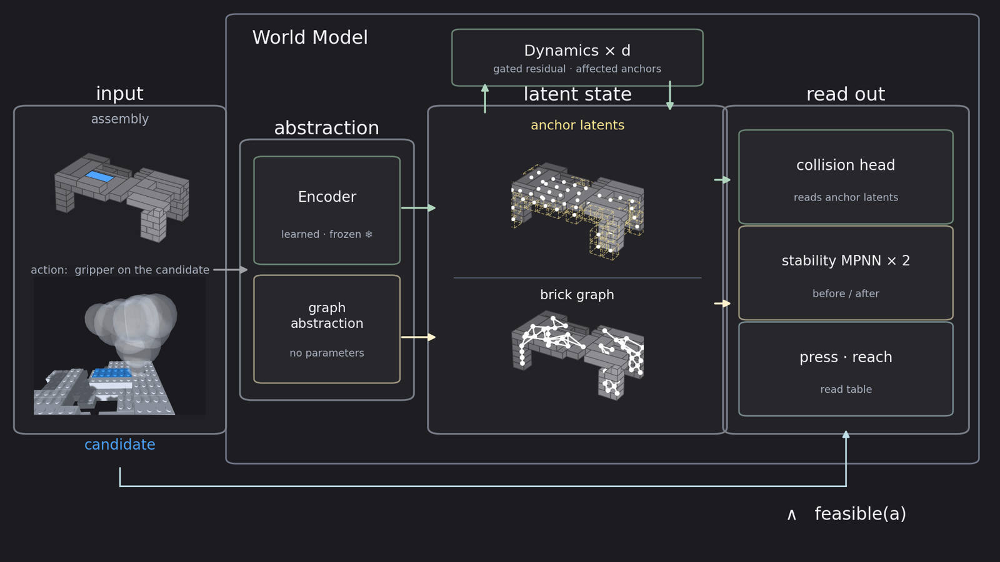
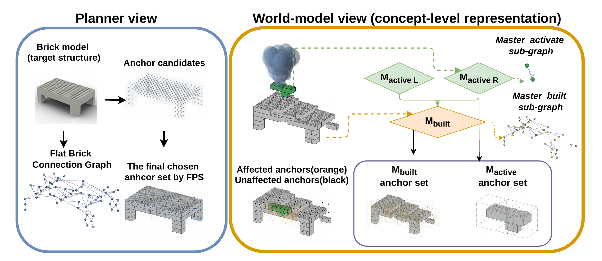

Abstract
This paper proposes a world model for planning assembly sequences for LEGO structures. The model predicts placement feasibility by looking ahead in a learned latent space, without invoking a physical simulator inside the look-ahead search. The primary technical challenge lies in judging whether committing to a placement leaves the remaining structure buildable, which requires reasoning over future steps. To address this, we represent the assembly with a multi-granularity heterogeneous graph, in which a master node aggregates the overall geometry of the assembled structure as a set of anchor tokens, while a brick-level sub-graph carries the interlocking topology and the static attributes of each brick. A latent dynamics model advances the anchor tokens locally after each placement, which lets the world model roll the geometry forward over several steps and anticipate whether a candidate placement obstructs the assembly of the remaining bricks. We validate the framework on held-out test structures from the StableText2Lego (Pun et al., 2025) benchmark, comparing it against ablations and recent assembly-sequence methods. Our planner achieves near-oracle solutions while issuing the fewest exact-oracle calls per brick and avoiding the later-infeasible placements incurred by the baselines.
Why look ahead?
Given a target LEGO structure, we want a sequence that a robot can actually build. Prior methods either look ahead with only a coarse feasibility proxy, or check feasibility exactly but only one step at a time. Either way, a brick placed now can block a step that comes much later.
A manipulation-level world model
Our world model consists of an encoder that abstracts the assembly into a latent state, a dynamics model that updates the latent state during rollout, and five predicate gates that read out the feasibility of an action.

The five predicates are the press and reach gates, a collision head, and a stability head applied before and after the action. All five must hold simultaneously.
These predicates consume information at different structural levels: stability depends only on the interlocking among bricks, while collision depends only on the exposed surface geometry of the assembly. We therefore give the world model a hierarchical heterogeneous graph, in which a master node Mbuilt aggregates the overall geometry of the assembled structure into a set of geometric latent anchors, and a brick-level sub-graph beneath it carries the interlocking topology.

Planning by latent rollout
We plan by disassembly: starting from the completed target, bricks are removed one group at a time until the structure is empty, and reversing the removal order yields a valid assembly sequence. At each step, an outer planner enumerates the bricks and groups that can currently be removed. The world model then rolls out each candidate in latent space and checks its feasibility. Every candidate is scored by the number of feasible continuations it opens, and the highest-scoring candidate is committed. This enumerate, roll out, and commit loop repeats until every brick has been removed.
Results
Assembly sequences produced by our world model across diverse brick structures, executed by two robot arms in simulation (playback is sped up).
We compare against ablations and external baselines on held-out test structures. Our planner achieves near-oracle solutions while issuing the fewest exact-oracle calls per brick. Please refer to the paper for the full protocol and analysis.
| Predicate | Success | McNemar | Oracle calls / brick |
|---|---|---|---|
| seq/none | 0.789 | — | 2.07 |
| reach/none | 0.789 | 0:0, p > 0.05 | 2.07 |
| reach/rollout | 0.825 | 235:408, p < 10−10 | 0.57 |
| wm/rollout (ours) | 0.905 | 129:511, p < 10−50 | 0.52 |
| oracle/none | 0.857 | 314:83, p < 10−30 | 1.93 |
McNemar compares each row with the row above; the last row is a single-step exact-oracle reference (depth 0).
| Method | Success (k/n) | McNemar |
|---|---|---|
| WorkBenchMark | 0.480 (36/75) | 13:0, p < 10−3 |
| ASAP (GNN) | 0.347 (26/75) | 23:0, p < 10−6 |
| Ours (single-brick actions only) | 0.653 (49/75) | — |
| Ours (groups of up to 5 bricks) | 1.000 (75/75) | — |
| Exact oracle + look-ahead | 0.587 (44/75) | — |
| H-WM | 0.343 (411/1200) | 673:10, p < 10−140 |
| OR solver | 0.312 (374/1200) | 720:2, p < 10−156 |
| PhysWorld | 0.809 (971/1200) | 157:36, p < 10−17 |
WorkBenchMark and ASAP: 75-structure small set (9–32 bricks). H-WM, PhysWorld and OR solver: 1,200-structure set, stratified by brick count. Success counts timeouts as failures.
BibTeX
@article{chen2026wmasp,
title = {A World Model for Assembly Sequence Planning},
author = {Chen, Xilun and Mottaghi, Roozbeh},
journal = {arXiv preprint},
year = {2026}
}